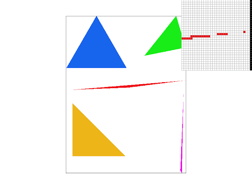
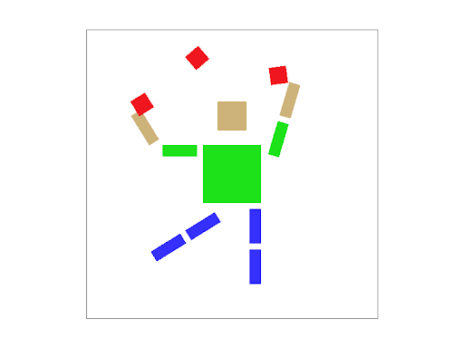
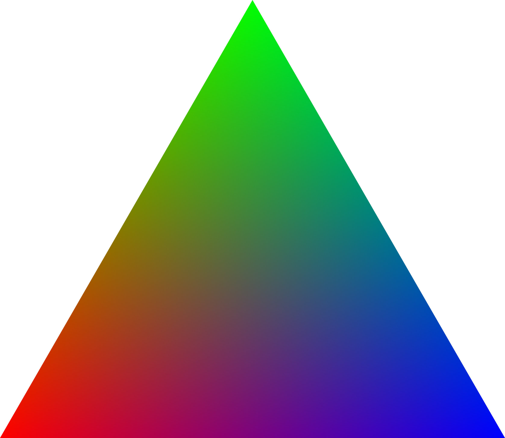
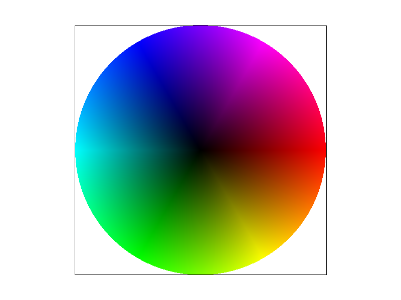

For a given triangle--from points P0 (x0, y0), P1 (x1, y1), and P2 (x2, y2)--our rasterization algorithm iterates through every pixel in the bounding box and uses the Three Line Tests method to determine whether that pixel is inside the triangle. Each line test takes the dot product of the vector between any 2 points (P0, P1, P2) and central pixel coordinates (x + 0.5, y + 0.5) as a vector, with a result greater than or equal to 0 meaning the pixel (x, y) is inside the triangle. The 3 lines created to test each pixel, regardless of clockwise or counter-clockwise winding, were:
L0(x, y) = -(x - x0)(y1 - x0) + (y - y0)(x1 - x0) → between points P0 and P1
L1(x, y) = -(x - x1)(y2 - x1) + (y - y1)(x2 - x1) → between points P1 and P2
L2(x, y) = -(x - x2)(y0 - x2) + (y - y2)(x0 - x2) → between points P2 and P0
To determine a triangle's winding, a vector cross product is calculated on the vector between P0 and P1 [x1 - x0, y1 - y0] and the vector between P1 and P2 [x2 - x1, y2 - y1]. If the cross product is negative, the winding is clockwise, otherwise the winding is counter-clockwise.
If the winding is clockwise, then a pixel (x, y) is inside the triangle if L0, L1, and L2 are not positive values: -L0(x, y) >= 0 && -L1(x, y) >= 0 && -L2(x, y) >= 0.
If the winding is counter-clockwise, then a pixel (x, y) is inside the triangle if L0, L1, and L2 are not negative values: L0(x, y) >= 0 && L1(x, y) >= 0 && L2(x, y) >= 0.
If a given central pixel coordinate (x + 0.5, y + 0.5) is inside the triangle, then the pixel (x, y) is filled with a color. Thus, for every triangle, we form the bounding box by identifying the minimum and maximum x and y coordinates out of P0, P1, and P2, where the bounding box dimensions are (max_x - min_x) by (max_y - min_y). Supersampling is useful because it helps to reduce aliasing, which makes the overall rasterized image look better to a person's eye. To achieve anti-aliasing via supersampling, our algorithm utilizes a sample rate of 1, 4, 9, or 16 with a sample rate of 1 being no different than not supersampling.
When the sample rate or the frame buffer is adjusted, the sample buffer is resized to be of length width * sqrt(sample rate) * height * sqrt(sample rate) in both of the rasterizing functions RasterizerImp::set_sample_rate and RasterizerImp::set_framebuffer_target because the width and height are scaled by a factor of sqrt(sample rate). Thus, each frame buffer pixel is represented by sample ratesample rate pixels in the sample buffer.
To accommodate supersampling, RasterizerImp::rasterize_triangle first had its points--P0 (x0, y0), P1 (x1, y1), and P2 (x2, y2)--scaled by sqrt(sample rate). The functions determining whether a pixel in the sample buffer is inside of the triangle were unchanged. This is because the sample buffer is already scaled, which means that each of the sample buffer pixels are a part of a single frame buffer pixel, which allows for simply checking the middle of each supersampled pixel comprising a single frame buffer pixel as opposed to checking checking fractional points of a single frame buffer pixel. The last change to the triangle rasterizing function is setting the color of the sample buffer directly rather than calling RasterizerImp::fill_pixel directly. These changes allowed for rasterized triangles to support supersampling.
The RasterizerImp::fill_pixel function was modified to support rasterizing lines and points. Instead of filling a single sample buffer pixel with a color, sqrt(sample rate) * sqrt(sample rate) pixels are filled with a single color so that a single frame buffer pixel will be filled with the aforementioned color, regardless of the supersampling sample rate.
To map the sample buffer to the framebuffer, RasterizerImp::resolve_to_framebuffer was adjusted. The two outermost loops iterate through each sqrt(sample rate) * sqrt(sample rate) squares of sample buffer pixels since each of those squares represents a single frame buffer pixel. Then, the two innermost loops iterate through each individual pixel in the square to average the red, green, and blue values for each pixel color in the square. Once we find the average color of the square, the framebuffer pixel is set to that color.
An example of the supersampling effect is shown below (from left to right and top to bottom, sample rate of 1, sample rate of 4, sample rate of 9, and sample rate of 16):
We see this effect because pixels more isolated from the main triangle are surrounded by white triangles, so the triangle's color (red) is diluted by the surrounding white pixels in the average color computation. On the other hand, the pixels closer to the base of the triangle are not diluted as much and retain their original color for the most part.
This picture of Cubeman represents the robot juggling 3 red balls and standing on one foot. First, Cubeman was modified to appear as a human with skin, a green shirt, and a pair of blue pants. His left leg was rotated 45 degrees to appear as standing on one foot. The hand of the left arm only was rotated 45 degrees to mimic joints. The entire right arm was rotated by 5 degrees. The red balls were added and scaled to be smaller than the head and rotated, each with different values, to represent the balls in motion in the air. For all rotations, additional translations were made to maintain the distance between body parts compared to when Cubeman was standing straight.
Barycentric coordinates are essentially a coordinate system with points relative to the distance between each of the vertices of a polygon. These relative distances can be used to blend colors or textures together. In this situation, each vertex represents a color or texture with barycentric coordinate points that look more like the traits of a vertex the closer the point is to that vertex.
As an example, we can have a triangle with a red vertex, green vertex, and blue vertex. As a barycentric coordinate point gets closer to the red vertex, the coordinate point's corresponding pixel gets more red. The same is true as the barycentric coordinate point gets closer to the green and blue vertices.
The top point is the green vertex. The bottom left point is the red vertex. The bottom right point is the blue vertex. In the middle, there is more of a blending since points are not as close to any vertex.
Color gradient with multiple triangles:
